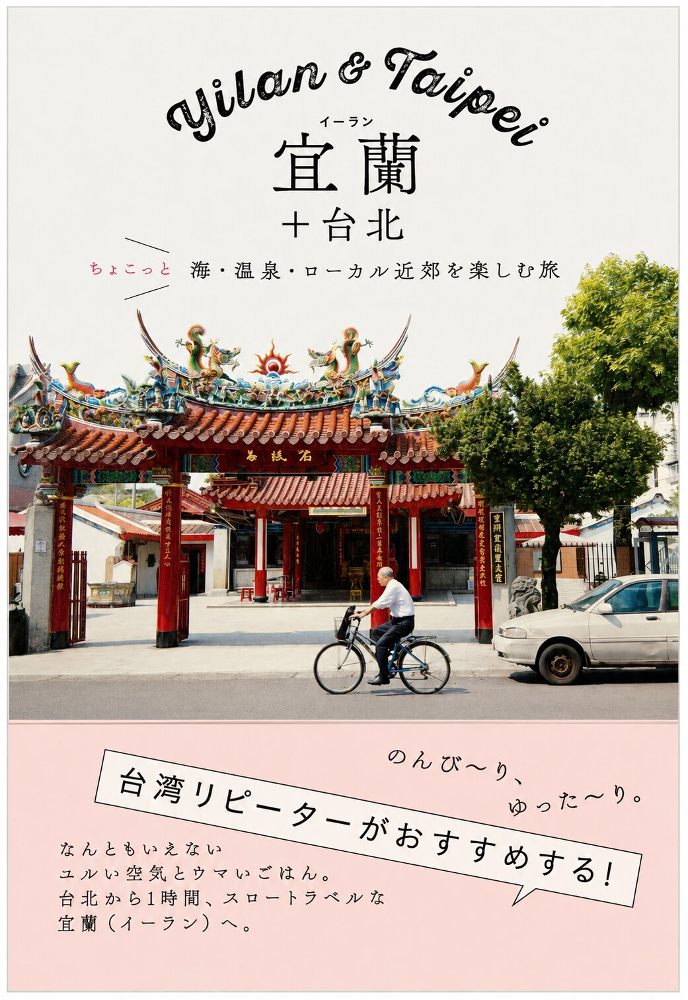
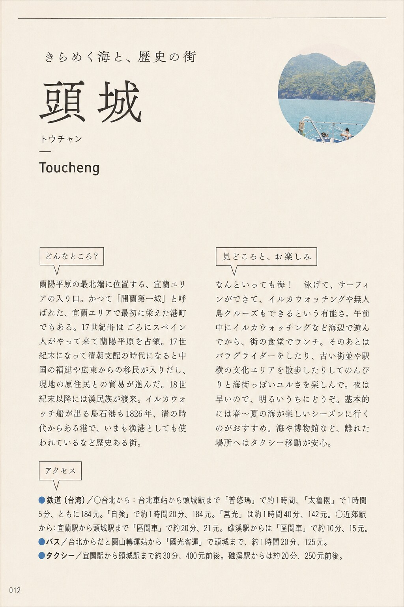

烏石港、北堤沙灘、外澳飛行傘基地
賞鯨、衝浪與飛行傘把頭城描繪成可以接近海洋、從山看海的戶外目的地。
LOCAL LITERATURE · TRAVEL GAZE · 2017
書不只記下景點，也留下某個年代的人如何理解頭城。這裡保存書目、觀看角度與可追溯的關聯資料，不取代原書。

第一筆地方文獻
這不是一本只談頭城的書，而是一冊由日本出版、介紹宜蘭與台北近郊旅行的日文指南。書中以完整章節介紹頭城，題為「閃耀的海與歷史之城」，把海洋活動、老街、老店飲食、文化空間與建築細節編成一條適合外地旅人閱讀的路線。
How the book saw Toucheng
書中先以烏石港、北堤沙灘與外澳飛行傘呈現「海」；再走入頭城老街、和平街屋、日和圖圖與蘭陽博物館，閱讀歷史街區、創意空間與文化館舍；最後以小涼圓冰店、聯發芋冰老店、一品碗粿、禾安素食坊與麻醬麵蛤蜊湯，讓飲食成為認識地方生活的入口。
值得注意的是，作者沒有只拍大型景點，也留意老屋花磚、街角樹木、店面尺度與居民日常。這種編排反映2010年代旅遊書從「必去景點」轉向「散步、體驗與地方感」的觀看方式。

Chapter index
賞鯨、衝浪與飛行傘把頭城描繪成可以接近海洋、從山看海的戶外目的地。
以老街格局、地方商品、日式宿舍再利用及博物館建築，串連歷史與當代文化。
選擇冰品、米食、素食與麵湯等日常飲食，留下2017年前後的店家樣貌與價格線索。
從牆面、地坪、電燈開關與廟宇花磚，觀察容易被旅客與居民忽略的建築細節。
Editorial note
本頁依使用者提供之書籍翻拍，核對封面、頭城章與版權頁後整理。書中地址、電話、價格及營業狀態屬2017年前後資料，不作為2026年的即時旅遊資訊；若要前往，仍應另行確認。
本頁採書目介紹、內容索引與評論式摘要，不重製完整內頁。原書文字、攝影、地圖與版面設計之權利，仍屬台湾マニア委員会、攝影者野村正治及PIE International等原權利人。
典藏狀態：已完成書目辨識；章節所列地點與現況、店家沿革及日文原文細節，後續可逐筆交叉查證。